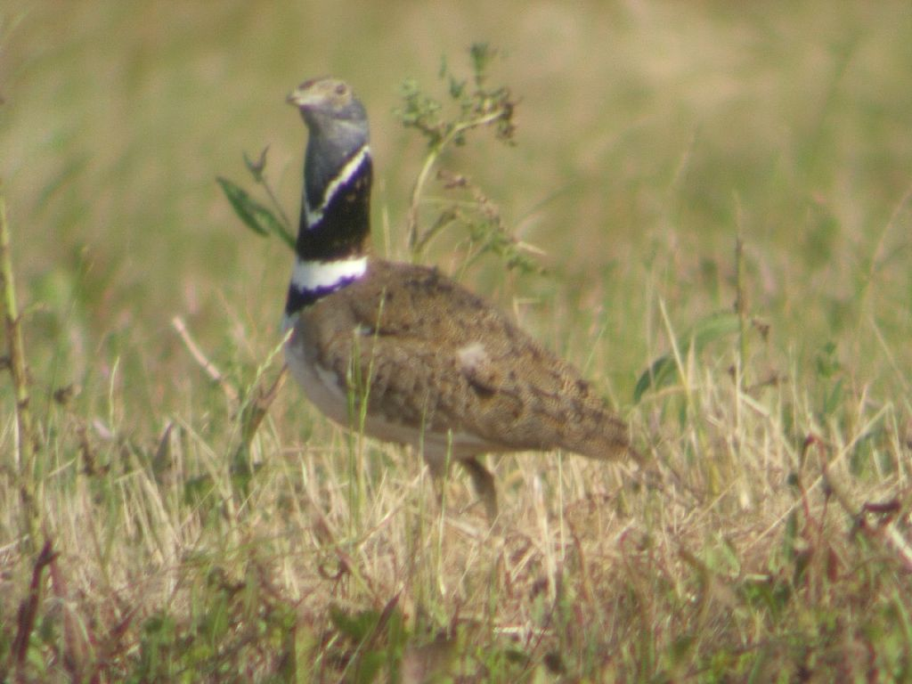

KORUMA ALTINA ALINAN TÜRLER
Alageyik
Acem Ceylanı
Çizgili Sırtlan
Akdeniz Foku
Anadolu Dikenli Faresi
Hint Oklu Kirpisi
Telli Turna
Mezgeldek
Bozkır Kartalı
Ak Kuyruklu Kartal
Bozkır Tuygunu

Ulu Doğan

Kelaynak
Toros Kurbağası

Kolan Balığı
Karaca
Kızıl Geyik
Dağ Keçisi
Çengel Boynuz

Kızıl Geyik
Dağ Keçisi
HAYVAN SEVGİSİ
Hayvanlar, yeryüzünü insanlarla paylaşan canlı varlıklardır. Birçok hayvan türü vardır ve bu hayvanların her birinin doğada bir önemi ve görevi vardır. Hiçbir hayvan boşuna yaratılmamıştır. Bazı hayvanları sevimli bulup beslerken hatta onları evlerimize bile alırken bazılarını kötülemek veya öldürmek insanlıkla bağdaşan bir şey değildir. Bütün hayvanlar değerlidir, hepsi önemlidir. Hepsinin canı vardır. Bazı insanlar büyük hayvanları önemserken nedense küçükleri önemsemez. Örneğin bir köpeği öldüren biri haber konusu olur, ona herkes kızar ve tepki gösterir. Oysa bir karıncayı, bir kelebeği veya arıyı öldürdüğünüzde kolay kolay kimse umursamaz. Halbuki onun da canı vardır. Bir köpek öldürüldüğünde hangi acıyı çekiyorsa, bir kelebek öldüğünde de aynı acıyı çeker. Bu nedenle hiçbir hayvana zarar vermemeli, hepsini korumalıyız. Kendi keyfimiz için onları yok etmemeliyiz. Dünya bize de yeter onlara da. Lütfen hayvanları sevelim ve onları koruyalım.
YAPILAN ÇALIŞMALAR
İnsanoğlu kendi yaşam alanınını genişletmeye çalışırken bir yandan da yaban hayatını tehdit etmeye başlamıştır. Özellikle gelişen teknoloji ile beraber bu durum malesef dahada artmıştır. Malesef diyorum çünkü insanın bu tutumu sanki kendisinden başka canlıların yaşama hakkı yokmuş gibi davranmasına neden olmuştur. Bu durumun çeşitli doğal felaketlere yol açacağının bilincine varılması sonucunda soyu tükenme tehlikesi ile karşı karşıya kalan bazı türler koruma altına alınmıştır. Doğal felaket dedim çünkü doğada var olan tüm canlılar bir zincir şeklinde birbirlerine bağlıdır ve günümüzde bu zincirin bir değil bir çok halkası eksilmek üzeredir.
- İnsanlar bilinçlendirilmeli.
- Yaşam zinciri koptuğunda bundan insanlarında zarar göreceği anlatılmalı.
- Derslerde bunlara daha ağırlık verilmeli.
- Devletin bu konular üzerinde durması.
- Hayvanlarında bir cana sahip olduğu unutulmamalı,bu olay soykırım olarak görülmeli.
Yapılması Gerekenler

GÖNÜLLÜ OL
HAKKIMIZDA
| Faaliyet Alanı | 2019 | 2020 | 2021 |
|---|---|---|---|
| Hayvan Kurtarma | 250 | 300 | 350 |
| Sokak Hayvanlarına Mama ve Su Dağıtımı | 500 | 600 | 700 |
| Hayvan Sahiplenme | 100 | 150 | 200 |